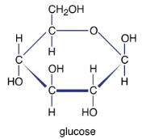
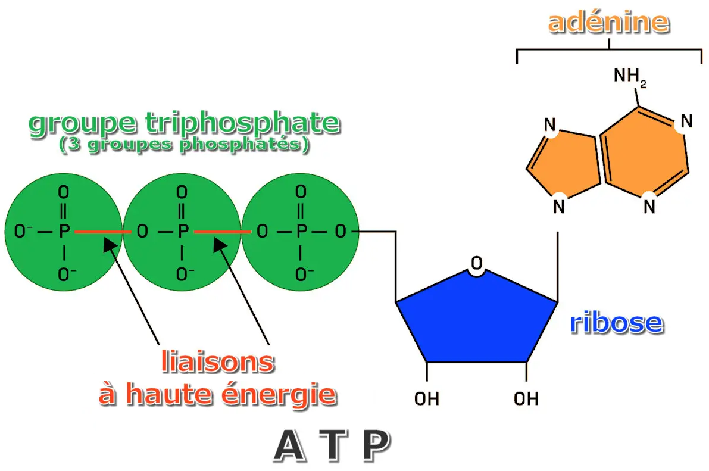

⚡ Matière et ATP : l'énergie dans la cellule
Une cellule vivante réalise en permanence des activités. Pour les accomplir, elle a besoin de matière et d'énergie. Découvrons comment ces deux notions sont liées.
1. La cellule a besoin d'énergie
Une cellule n'est pas une structure inactive : elle réalise différentes activités qui nécessitent de l'énergie. Cette énergie est liée à l'utilisation de la matière organique consommée par la cellule.
Pour réaliser ses activités, la cellule a besoin d'énergie.
2. Matière organique et matière minérale
on distingue deux catégories de matière : la matière organique et la matière minérale.
🌿 Matière organique
elle correspond aux molécules composées de carbone (C), d'hydrogène (H) et d'oxygène (O).
Exemple étudié :
Glucose : C6H12O6

💧 Matière minérale
elle correspond aux molécules ne répondant pas à la définition précédente.
Exemples étudiés :
CO2, H2O, O2,
NaCl et H3PO4.
3. L'ATP : une molécule énergétique
Dans la cellule, l'énergie est stockée dans une molécule appelée ATP : Adénosine Triphosphate.

L'ATP constitue une molécule énergétique directement utilisable pour le travail cellulaire.
4. Hydrolyse de l'ATP : libérer de l'énergie
Lorsque la cellule a besoin d'énergie, l'ATP est hydrolysé. Cette réaction transforme l'ATP en ADP et libère de l'énergie.
ADP signifie Adénosine Diphosphate et Pi représente le phosphate inorganique.
5. Synthèse de l'ATP : stocker de l'énergie
L'ATP peut être reformé à partir de l'ADP et du phosphate inorganique. Cette synthèse nécessite un apport d'énergie.
⚡ ATP : hydrolyse et synthèse
Clique sur les boutons pour observer les deux transformations de l'ATP.
6. Du glucose au travail cellulaire
L'ATP joue un rôle d'intermédiaire entre l'énergie provenant de la dégradation de la matière organique et les activités réalisées par la cellule.
Ainsi, l'énergie issue de la dégradation du glucose peut être utilisée pour synthétiser l'ATP. L'hydrolyse de l'ATP libère ensuite l'énergie nécessaire au travail cellulaire.
🧠 Je vérifie que j'ai compris
Avant de poursuivre, assure-toi de pouvoir expliquer avec tes propres mots :
✓ La différence entre matière organique et matière minérale.
✓ Ce que signifient ATP et ADP.
✓ Ce qui se produit lors de l'hydrolyse de l'ATP.
✓ Le lien entre glucose, ATP et travail cellulaire.